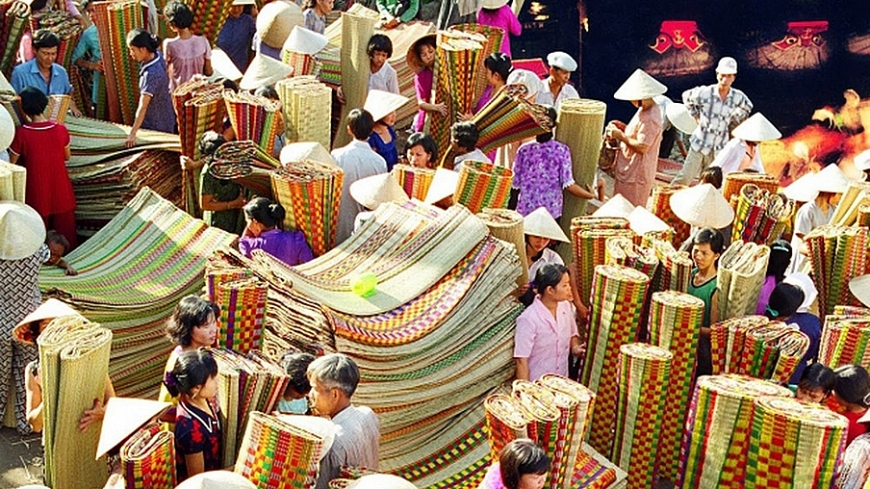
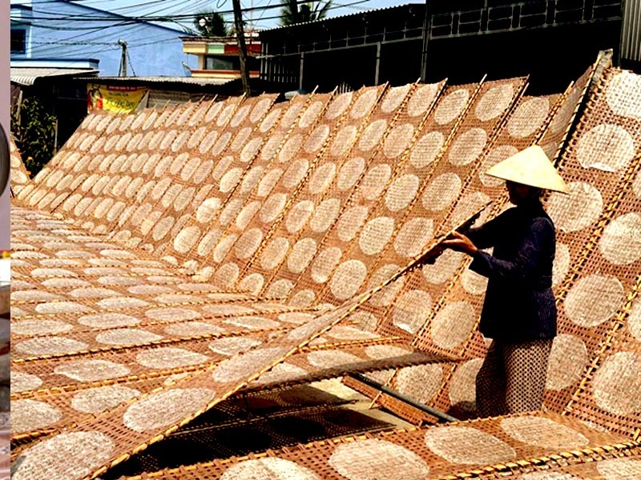
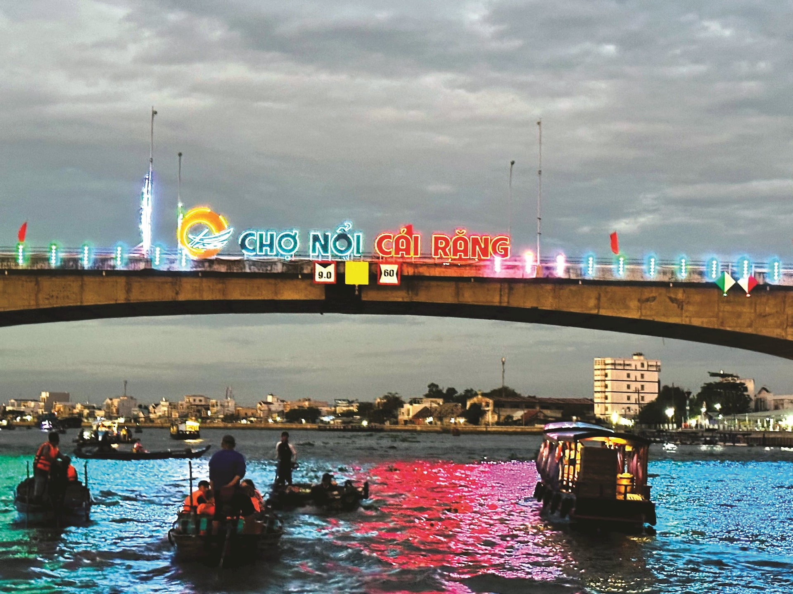
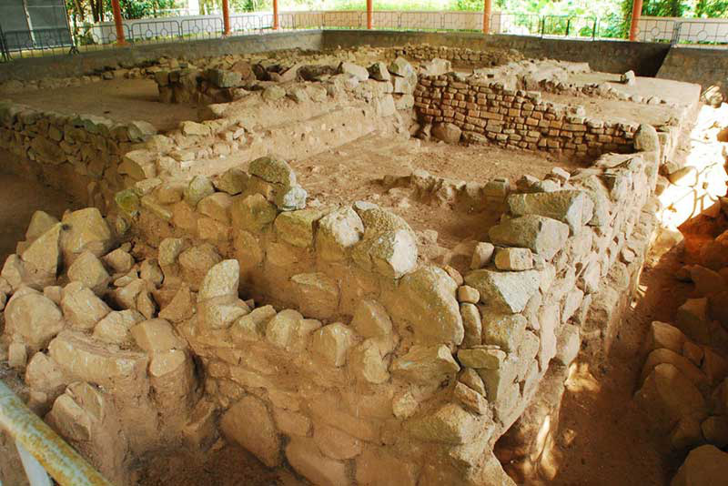
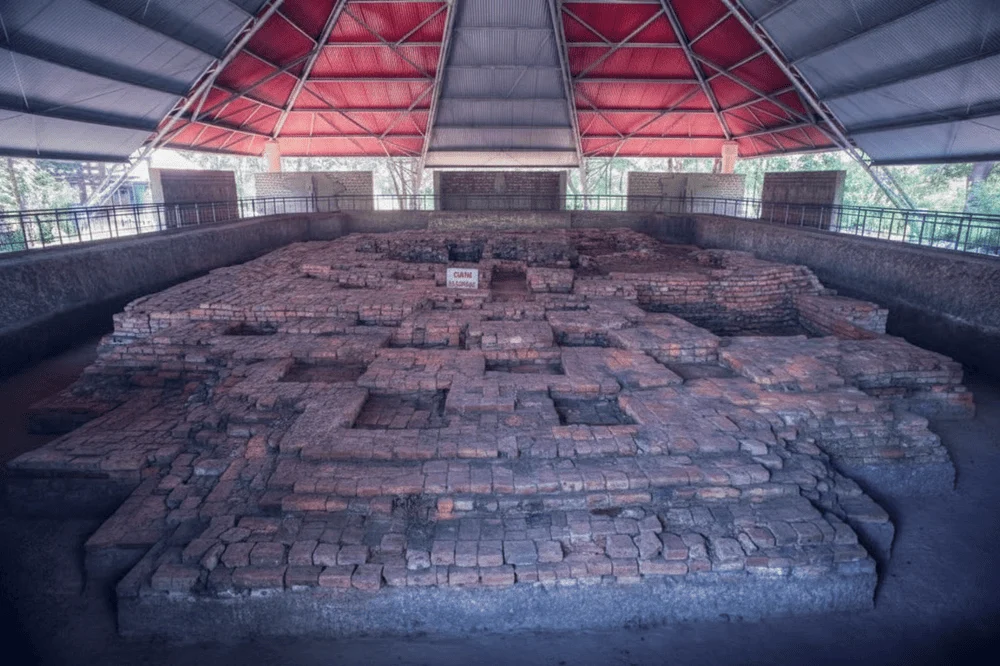
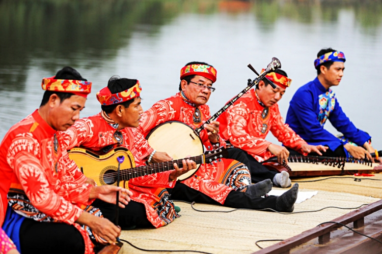
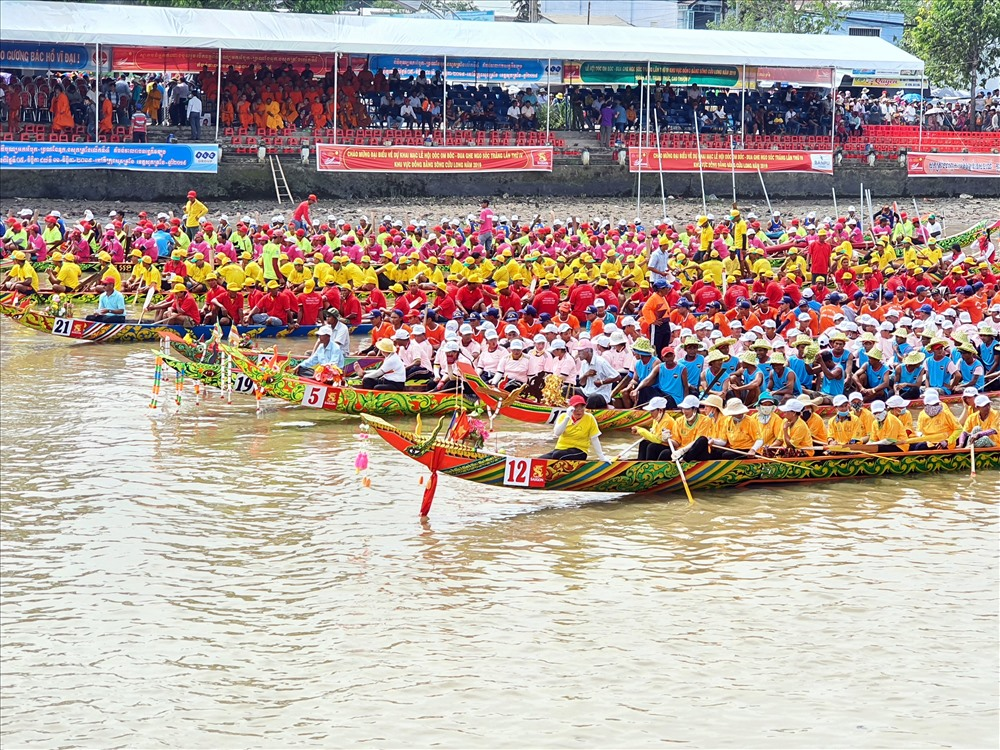
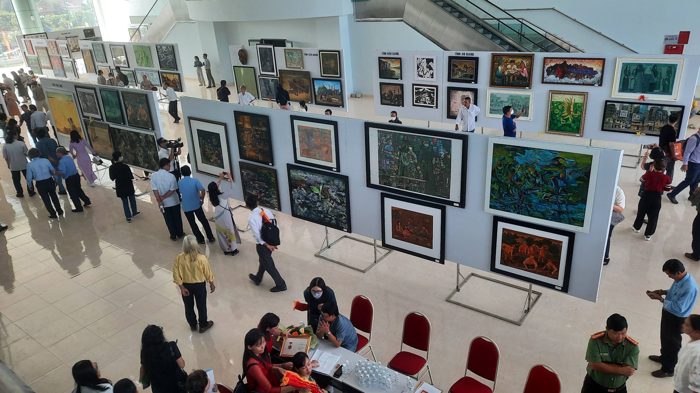
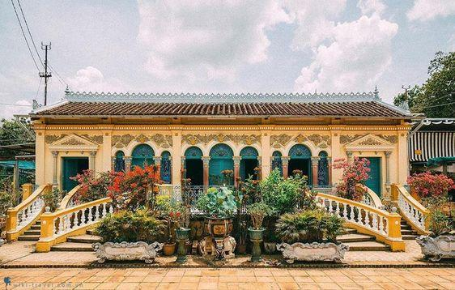

Giữ lửa nghề dệt chiếu Định Yên mùa nước nổi tại Đồng Tháp
Nằm bên dòng sông Hậu hiền hòa thuộc huyện Lấp Vò, tỉnh Đồng Tháp, làng chiếu Định Yên đã có lịch sử hơn trăm năm. Những nghệ nhân nơi đây vẫn miệt mài ngày đêm bên khung cửi thủ công để tạo ra những chiếc chiếu hoa rực rỡ, bền đẹp cung cấp cho khắp vùng ĐBSCL.

Nhộn nhịp Làng nghề bánh tráng Thuận Hưng - Cần Thơ
Đến với quận Thốt Nốt, thành phố Cần Thơ vào những ngày cận Tết, du khách sẽ cảm nhận được bầu không khí hối hả tại làng nghề Thuận Hưng. Các lò bánh tráng nổi tiếng tại đây liên tục đỏ lửa cả ngày lẫn đêm để kịp phơi và cung ứng những mẻ bánh thơm ngon cho thị trường cả nước.

Trải nghiệm nét văn hóa sông nước tại Chợ nổi Cái Răng - Cần Thơ
Chợ nổi Cái Răng là điểm đến không thể bỏ qua khi ghé thăm thành phố Cần Thơ. Hiện nay, ngành du lịch địa phương đang đẩy mạnh mô hình tham quan kết hợp văn hóa bản địa, giúp du khách vừa trải nghiệm cảm giác bồng bềnh trên ghe xuồng, vừa thưởng thức các sản vật trái cây phong phú ngay tại chợ.

Hành trình về các ngôi chùa cổ Khmer tại tỉnh Trà Vinh
Trà Vinh nổi tiếng with hơn 140 ngôi chùa mang kiến trúc cổ kính của người Khmer. Trong đó, hành trình khám phá hệ thống kiến trúc chạm khắc độc đáo lâu đời của Chùa Âng (nằm trong quần thể danh thắng Ao Bà Om) luôn mang lại cho du khách những trải nghiệm tâm linh an lành, thanh tịnh.

Phát hiện mới tại Khu di tích khảo cổ Óc Eo - Tỉnh An Giang
Tại di tích quốc gia đặc biệt Óc Eo - Ba Thê thuộc tỉnh An Giang, các nhà khảo cổ học vừa khai quật thêm hệ thống kiến trúc nền móng gạch cổ cùng nhiều hiện vật gốm mịn. Phát hiện này có niên đại từ nhiều thế kỷ trước, mở ra góc nhìn sâu hơn về vương quốc Phù Nam xưa.

Khai quật khảo cổ học tại Di tích quốc gia Gò Tháp - Đồng Tháp
Khu di tích Gò Tháp tại huyện Tháp Mười, tỉnh Đồng Tháp vừa hoàn thành đợt khảo sát thực địa mới. Cuộc khai quật lần này đã làm lộ diện thêm các vết tích cư trú cổ xưa, giếng nước cổ và hiện vật tùy táng độc đáo của cư dân thuộc nền văn hóa Óc Eo cổ đại.
Độc đáo di sản văn hóa phi vật thể quốc gia: Hò Đồng Tháp
Hò Đồng Tháp là loại hình diễn xướng dân gian độc đáo mang tính biểu cảm cao của người dân vùng đất sen hồng tỉnh Đồng Tháp. Những điệu hò êm dịu, mênh mang đậm chất sông nước miền Tây này đang được chính quyền và người dân địa phương phục dựng, đưa vào trường học để bảo tồn bền vững.

Bảo tồn nghệ thuật Đờn ca tài tử Nam Bộ tại tỉnh Bạc Liêu
Được mệnh danh là một trong những cái nôi của đờn ca tài tử Nam Bộ, tỉnh Bạc Liêu luôn chú trọng giữ gìn di sản phi vật thể này. Nhiều câu lạc bộ đờn ca tại địa phương đang tích cực truyền dạy miễn phí ngón đàn, bài bản tài tử cho thế hệ trẻ nhằm giữ gìn bản sắc độc đáo của quê hương cố nhạc sĩ Cao Văn Lầu.

Linh thiêng Lễ hội Vía Bà Chúa Xứ Núi Sam - Tỉnh An Giang
Sự kiện văn hóa tâm linh lớn bậc nhất vùng miền Tây Nam Bộ tại thành phố Châu Đốc, tỉnh An Giang đã chính thức khai mạc. Lễ hội thu hút hàng triệu lượt khách hành hương đổ về tham dự nghi thức tắm Bà vô cùng trang trọng, cầu mong quốc thái dân an và gia đạo bình an.

Rực rỡ sắc màu Lễ hội Ok Om Bok tại tỉnh Sóc Trăng
Lễ hội cúng trăng Ok Om Bok của đồng bào Khmer năm nay tại tỉnh Sóc Trăng diễn ra vô cùng sôi động. Sự kiện đã thu hút hàng ngàn người dân và du khách thập phương đổ về dọc hai bên bờ sông Maspero để cổ vũ cho giải đua ghe Ngo truyền thống rực rỡ sắc màu.

Khai mạc Triển lãm không gian văn hóa vùng sông nước tại Cần Thơ
Diễn ra tại trung tâm thành phố Cần Thơ, sự kiện quy tụ hàng trăm bức ảnh nghệ thuật quý giá cùng các nông cụ sản xuất, đánh bắt xưa. Triển lãm không chỉ tái hiện cuộc sống khẩn hoang mà còn góp phần tôn vinh giá trị lao động, cốt cách kiên cường của người dân miền Tây.

Hội thảo khoa học về bảo tồn di sản kiến trúc cổ ven sông tại Tiền Giang
Được tổ chức tại thành phố Mỹ Tho, tỉnh Tiền Giang, hội thảo quy tụ nhiều chuyên gia văn hóa lớn. Các giải pháp quy hoạch đô thị hiện đại đã được đưa ra thảo luận nhằm mục đích vừa phát triển kinh tế, vừa giữ gìn được nét đẹp mộc mạc, cổ kính của các ngôi nhà cổ Nam Bộ.